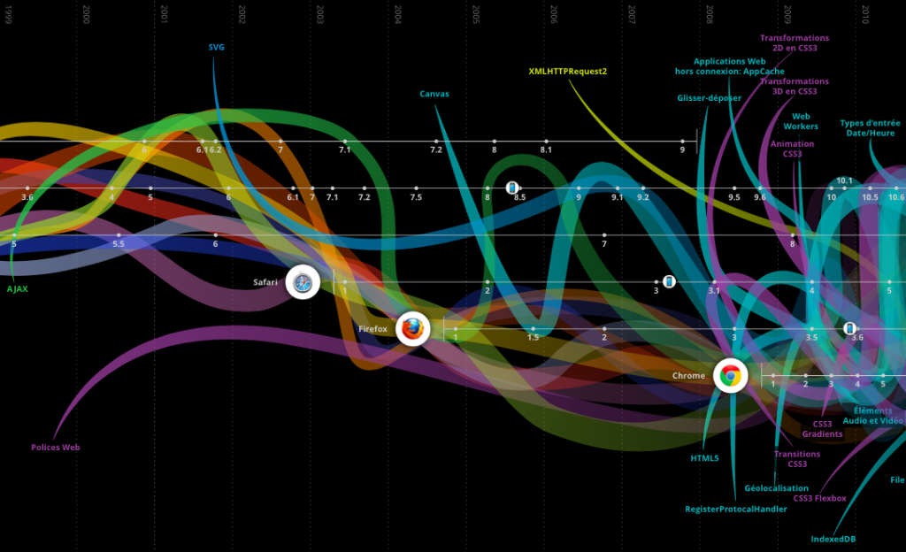
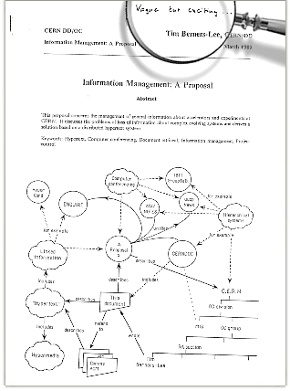
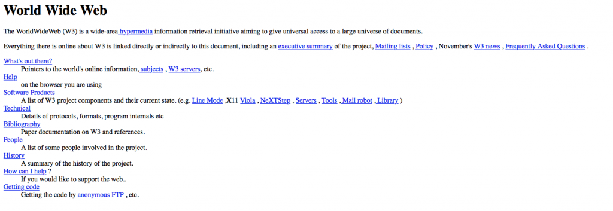
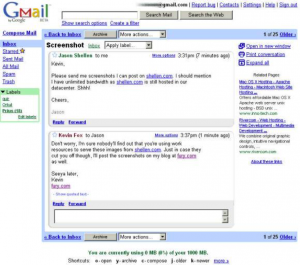
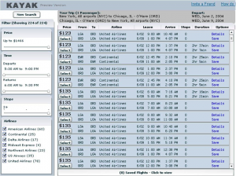
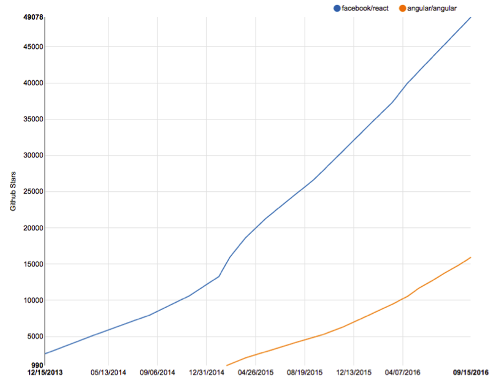

Une brève histoire du web en 8 étapes
En un peu plus de 2 décennies, nous sommes passés du site internet affichant simplement du texte à la création de technologies de développement basées sur le web qui permettent la création d’Applis. Cette évolution a changé la manière dont les gens utilisent le web mais aussi l’environnement dans lequel Apptitude travaille au quotidien.
1. L’inventeur du web
A l’origine du web et donc à la base de l’histoire du web se trouve Sir Tim Berners-Lee qui est considéré comme l’inventeur du World Wide Web. Sir Tim travaillait au CERN et voulait trouver une solution pour faciliter le partage d’informations entre ingénieurs. A cette époque, avec le développement d’internet, de nombreux ordinateurs étaient déjà connectés. Il a donc trouvé la réponse pour le partage d’informations en combinant internet avec une autre technologie émergente : Hypertext.
En 1989, Sir Tim mit sur papier sa vision de ce qui deviendra le Web dans un document nommé “Information Management: A Proposal”. Pour l’anecdote, son chef gratifia ce document de l’annotation « vague but exciting ».
Cependant Sir Tim eut la permission de travailler sur ce projet et en octobre 1990 Tim avait écrit trois des technologies fondamentales du web d’aujourd’hui :
- HTML: HyperText Markup Language. Le langage de balisage (formatage) du web.
- URI: Uniform Resource Identifier. Une sorte d’adresse qui est unique et utilisée pour identifier chaque ressource à travers le web. Communément aussi appelé un URL.
- HTTP: Hypertext Transfer Protocol. Permet la récupération de ressources liées à travers le Web.
2. Que du HTML
En décembre 1990 la première page web au monde a été lancée. Une copie du site est toujours disponible.
Ces premières pages web, comme le montre l’exemple ci-dessus ne contenaient, de manière schématisée, que de l’information et des liens. Le seul langage disponible était le HTML et celui-ci venait avec des limitations en terme de mise en forme, d’où la création de sites qui n’avaient ni composantes de style élaborées, ni éléments dynamiques.
3. Le CSS : A fond la forme
En 1996 le CSS level 1 est publié. L’idée derrière le Cascading Style Sheet (Feuille de style en cascade) est de séparer le contenu et la forme d’un site web. Le CSS est le langage qui permet de modifier le rendu d’un document structuré, tels les documents HTML. Le CSS permet ainsi de modifier l’aspect visuel des données du document en question.
Ce nouveau langage et ses versions successives ouvrent la voie à l’intégration et l’évolution de la mise en forme sur les pages web, notamment avec l’apparition d’images et du positionnement des différents éléments.
4. Javascript des débuts timides jusqu’à l’intégration d’AJAX
Javascript est créé en 1995 par Brendan. Cependant dans les années qui suivent peu de gens adoptent et utilisent ce nouveau langage, jusqu’à ce que Google et Kayak utilisent de manière efficace le concept de programmation AJAX, avec l’objet XMLHttpRequest et ses requêtes asynchrones entre le navigateur et le serveur.
L’utilisation de ces requêtes a mené à la création de sites web dynamiques notamment Gmail. Site web qui fut particulièrement apprécié par ses utilisateurs pour son avantage en termes de fluidité sur ses concurrents de l’époque.
C’est cette dynamisation des sites web en lien avec les appels AJAX qui ont suscité l’intérêt du public et par la suite ont mené à populariser Javascript.
5. JQuery, du dynamisme à la portée de tous
La mise en place du framework JQuery en 2006 est très intéressante, car elle offre de nouvelles possibilités aux programmateurs inexpérimentés. Notamment parce que JQuery permet au grand public de rendre facilement les pages web dynamiques. Ce framework a aussi l’avantage de résoudre la problématique de compatibilité avec les nombreux navigateurs, un seul code fonctionne sur tous les navigateurs.
Cependant JQuery vient avec certains inconvénients, le code est difficilement structurable même en effectuant des refactorisations du code régulières. JQuery montre aussi certaines limitations au niveau de la testabilité ou en considérant la scalabilité.
- La scalabilité (capacité de mettre à l’échelle un programme) peut être décrite comme la capacité à supporter la charge grandissante d’un ou des facteurs suivants: le nombre d’utilisateurs, de fonctionnalités ou de développeurs travaillant sur un projet.
6. Angular JS, plus de structure
Angular JS est un framework Javascript pour construire des Webapps qui a été développé par Google et publié en 2012. Ce framework se distingue de JQuery, car il offre une structure du code qui encadre le développement du front-end des WebApps. Angular JS se base sur une architecture MVC (Model View Controller).
Le fait d’avoir une architecture générique permet de répondre à un des éléments de mise à l’échelle adressé précédemment ; le nombre de développeurs qui travaillent sur un projet. En particulier, cette architecture permet la prise en main de n’importe quel projet développé en Angular JS par un autre développeur.
Un autre avantage notable est le fait que ce framework permet de tester le code facilement.
7. React, une architecture par composants
React est publié presque en même temps qu’Angular JS et se présente comme une bibliothèque Javascript pour créer des interfaces utilisateurs. React fut élaboré par Facebook avec comme objectif de créer un moteur de rendu de composants performant et qui se base sur les DOM-virtuel. Nous pouvons relever que cet objectif fut atteint étant donné que React est de trois à dix fois plus rapide qu’Angular JS dans le rendu de composantes.
Le développement sur React est purement orienté composantes, où le développeur crée des composantes du front-end qui pourront par la suite être réutilisées et/ou combinées. Ce qui représente l’un des avantages de React, c’est-à-dire de créer des interfaces utilisateurs scalables.
8. Angular 2 et l’effet Osborne
Annoncé en 2014, l’arrivée d’Angular 2 est un exemple de l’effet Osborne, cette annonce prématurée a eu comme conséquence d’accentuer la popularité et de favoriser l’essor de React aux dépens d’Angular 1. Les deux ans d’attente avant la parution d’Angular 2 ont suscité un sentiment de méfiance auprès des développeurs quant à Angular 1. Comme le montre le graphique ci-dessous, les développeurs ont favorisé React pour le développement de leur projet.
Le web de demain
Après avoir fait un bref tour d’horizon des évolutions marquantes du web d’hier jusqu’aujourd’hui qui ont un impact sur le quotidien d’Apptitude, nous allons considérer certains éléments du web de demain.
Tout d’abord, nous pouvons imaginer que nous nous dirigerons vers la création de plateformes web hors-ligne avec la mise en place et le développement des ‘’services workers’’. La navigation traditionnelle comme nous la connaissons sera remplacée par une simulation de navigation hors-ligne.
Nous pouvons aussi relever une convergence entre le Web et les Apps, vu que les technologies de développement Web s’immiscent davantage dans le développement d’ Apps avec comme exemple les technologies React Native et Ionic-Angular.
En considérant les possibilités qu’offrent les services workers en terme d’utilisation hors-ligne, nous pouvons aussi imaginer que les technologies de développement Web (citées ci-dessus) vont remplacer les technologies natives (Objective-C, Swift, Java, etc.) pour certaines applications. Cette évolution est soutenue par les avancées en terme d’optimisation graphique et de gestion du stockage qu’offrent les WebApps. Finalement le choix entre le natif et le web se fera toujours en fonction des besoins et de la particularité de la solution à développer.
Découvrez la superbe infographie de l’image d’en-tête


Adrian Baumann
Adrian has studied international business development and shows great interest in travelling as well as getting to know different cultures. He supports the team’s marketing & communications efforts. With his background in sport sciences Adrian is always motivated for a football game, be it outdoors or on the table. View all posts by Adrian Baumann